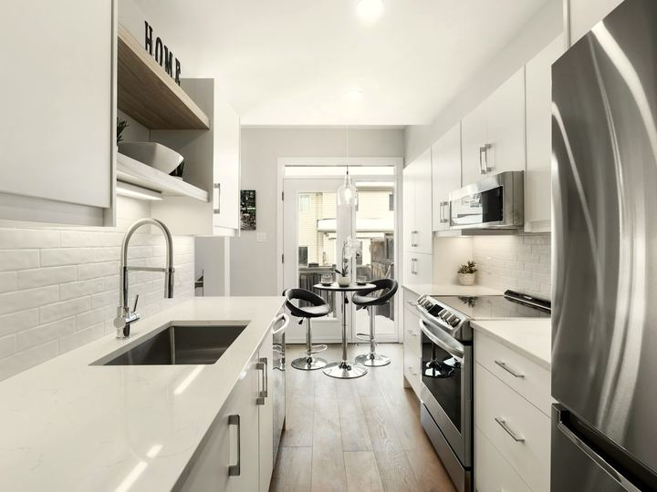
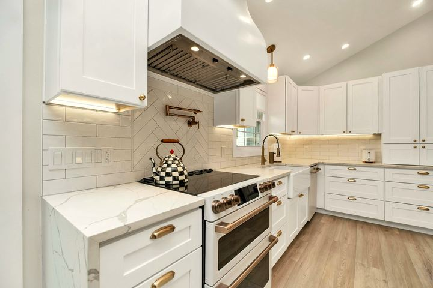

Home / Cabinet refacing
Refacing or replacing your cabinets?
Not sure if your kitchen needs new doors or a full teardown? Here's how FMA works out which one makes sense for your cabinets, and what each option includes.

- Free on-site estimate
- (267) 367-3388, call or text
- Mon–Fri 7am–6pm, Sat 7am–1pm
Refacing or full replacement
Many Northeast Philadelphia kitchens do not need a full gut renovation to look new. If the cabinet boxes are square, solid and in the right layout, refacing (new doors, drawer fronts and hardware over the existing boxes) can change the whole look for a fraction of a teardown.
Full replacement makes sense when boxes are water-damaged, particle board is swelling, the layout needs to change, or you want an island where there is not one today. We tell you honestly which one your kitchen needs, and we do not push a bigger job than you need.
How we help you decide
On the free walkthrough, we check four things before recommending refacing or replacement:
- Box condition. Square, dry and solid, or swollen and damaged
- Layout. Does the kitchen work as it is, or do you want to move plumbing, add an island or open it up
- Budget. Refacing typically costs less than full replacement for the same footprint
- Timeline. Refacing is usually faster, with less disruption to your kitchen
What's included either way
- New doors, drawer fronts and matching end panels (refacing) or full new cabinet boxes (replacement)
- New hardware: pulls, hinges and soft-close drawer slides
- Crown molding and trim to match your style
- A clean jobsite every day and one point of contact from estimate to final walkthrough
- Licensed and insured work in Pennsylvania

Questions
Is cabinet refacing cheaper than full replacement?
Usually, yes. Refacing reuses your existing cabinet boxes and only replaces doors, drawer fronts and hardware, so materials and labor are less than tearing everything out. The exact difference depends on your kitchen's size and the door style you choose. We'll give you real numbers on the free walkthrough.
How do I know if my cabinets can be refaced?
If the boxes are square, dry, and free of water damage or swelling, they're usually a good candidate. We check this in person during the free estimate before recommending refacing over replacement.
How long does refacing take compared to replacement?
Refacing is typically faster since we're not tearing out and rebuilding the boxes. Full replacement takes longer, especially if the layout is changing. We'll give you a specific timeline once we've seen your kitchen.
Do you serve my part of Northeast Philadelphia?
We work throughout Northeast Philadelphia, including Fox Chase, Rhawnhurst, Bustleton, Somerton, Holmesburg, Tacony, Mayfair and Oxford Circle, plus Montgomery County, Bucks County and the Main Line.
Ready to talk about your kitchen?
Tell us about your project and we'll call within one business day to set up a free walkthrough.